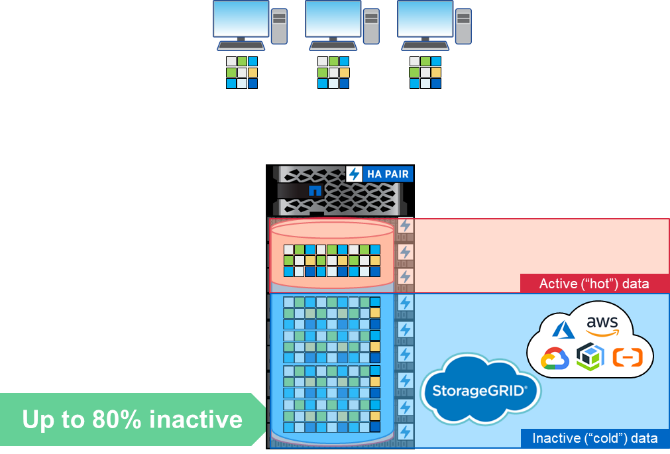

문서 변경 요청
문서 변경 요청 이 페이지 편집
이 페이지 편집 기여하는 방법 자세히 알아보기
기여하는 방법 자세히 알아보기스토리지 효율성
기여자
스토리지 효율성에는 스토리지 시스템의 데이터가 사용하는 물리적 용량의 양을 줄이는 기능이 포함됩니다. ONTAP의 경우 다음과 같은 항목이 포함됩니다.
-
데이터 압축
-
데이터 컴팩션
-
데이터 중복제거
-
NetApp FabricPool를 참조하십시오
이러한 정의는 다음과 같이 확장되기도 합니다.
-
NetApp FlexClone 기술
-
NetApp Snapshot 복사본
스토리지 효율성은 구입해야 하는 물리적 하드웨어의 양을 줄여 스토리지 비용을 낮게 유지하는 데 매우 중요합니다. ONTAP는 시스템 성능에 미치는 영향을 최소화하면서 시스템 인라인(AFF 시스템) 또는 후처리(모든 시스템)에서 데이터 축소를 수행할 수 있습니다.
ONTAP 9.8에는 스토리지 효율성을 위해 여러 가지 향상된 기능이 있습니다.
FabricPool
FabricPool는 파일 시스템에서 냉각된 블록을 가져와 4MB 오브젝트로 번들로 묶어 클라우드 또는 S3 버킷으로 제공하는 NetApp 데이터 계층화 기술입니다. 콜드 데이터는 스토리지 시스템에서 전체 용량의 최대 80%를 사용할 수 있으므로 성능 계층을 유지하는 대신 저렴한 스토리지 솔루션으로 이동하는 것이 좋습니다.
이 모든 작업은 설정할 수 있는 계층화 정책을 통해 ONTAP에서 자동으로 수행되며, 비활성 데이터 보고 기능을 통해 현재 스토리지 시스템에서 사용 중인 콜드 데이터의 양을 확인할 수 있습니다. 이를 통해 FabricPool이 실제로 비용을 절감하는지 평가할 수 있습니다.

클라이언트가 클라우드로 계층화된 파일에 액세스할 때 전체 파일이 아닌 요청된 블록만 성능 계층으로 다시 가져와 액세스합니다.
FabricPool에 대한 자세한 내용은 를 참조하십시오 "TR-4598: FabricPool 모범 사례" 및.
ONTAP 9.8은 다음과 같은 FabricPool 기능을 지원합니다.
-
* HDD 애그리게이트에서 계층화 * ONTAP 9.8 이전에는 ONTAP에서 클라우드로 FabricPool 계층화는 SSD 애그리게이트에서만 가능했습니다. ONTAP 9.8을 사용하면 이제 HDD 애그리게이트에서 FabricPool를 사용하여 계층화할 수 있습니다.
-
ONTAP S3로 계층화 * 이제 ONTAP S3를 사용할 수 있게 되었으므로 이제 FabricPool를 사용하여 ONTAP 시스템에서 ONTAP S3 버킷으로 계층화할 수 있습니다. 따라서 오래된 용량 스토리지를 FabricPool 계층으로 사용하여 용도를 변경할 수 있습니다. 그리고 동일한 클러스터에 계층화하면 클라우드 네트워크 연결을 탐색하는 것보다 검색 시간이 더 빨라집니다.
-
* 냉각 기간 증가. * ONTAP 9.8 이전에는 최대 63일의 냉각 기간 후 데이터가 냉각으로 표시됩니다. ONTAP 9.8을 사용하면 최대 183일까지 구성할 수 있습니다. 재무 보고서와 같이 분기별로 액세스하는 데이터와 같이 산발적으로 액세스할 수 있는 데이터에 유용합니다.
-
* 오브젝트 태그 지정. * 오브젝트 태그를 기반으로 데이터를 관리하는 정보 수명 주기 정책을 제공하는 S3 공급자로 계층화할 경우, ONTAP 9.8은 FabricPool를 사용하여 계층별로 오브젝트를 태그하여 정책에 통합할 수 있습니다.
-
* 클라우드 검색. * 일부 경우 모든 계층화된 데이터를 클라우드에서 다시 가져와야 할 수 있습니다. 이제 모든 데이터에 액세스할 필요 없이 ONTAP 9.8에서 클라우드에서 데이터를 검색하는 작업을 실행할 수 있습니다.
압축
ONTAP 9.8에는 성능을 개선하고 압축 가능한 데이터 세트의 데이터 축소율을 개선하는 데 도움이 되는 몇 가지 데이터 압축 변경 사항이 도입되었습니다.
압축의 주요 변경 사항은 데이터를 콜드 및 핫 분류로 구분하는 것이었습니다. 콜드 데이터는 오랫동안 액세스되지 않은 데이터이며 핫 데이터는 자주 액세스되는 데이터입니다. 즉, 핫 데이터를 더 적게 압축하고 콜드 데이터를 더 적극적으로 압축하려고 합니다.
ONTAP 9.8에서는 8K 압축 그룹을 사용하여 핫 데이터가 인라인으로 압축됩니다. 또한 데이터 중복제거는 압축 전에 수행되어 데이터 세트의 효율성이 더욱 향상됩니다.
그런 다음 백그라운드 에서 보다 공격적인 32K 압축 그룹을 사용하여 콜드 데이터가 다시 압축됩니다. 이러한 변화를 통해 핫 데이터의 성능이 향상되고 모든 데이터의 데이터 축소율이 향상됩니다.